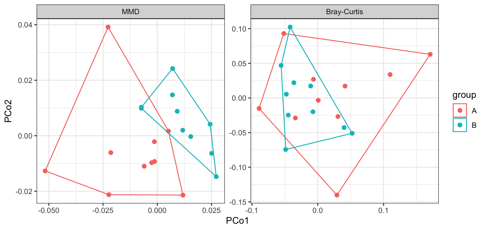

Metaproteomes are usually compared by accession: Bray-Curtis, or a
test per protein, treats two different proteins as unrelated even when
they share fold and function. Proteins of one function in different
organisms are often too far apart in sequence for a sequence clustering
to join them. repdist compares proteins by their embeddings
from a protein language model, by default TM-Vec, where the cosine
similarity of two proteins is their predicted TM-score. On that
representation it
sample_mmd()
gives a sample-by-sample distance, the maximum mean discrepancy (MMD)
between the samples’ abundance-weighted distributions over the
embeddings;protein_similarity()
and bin_proteins() group structurally similar proteins by
Markov clustering;bin_glom() sums counts within bins.The goal is to see a change in what the proteins do, not only in which accessions are present.
simulate_cog is built from the NCBI COG 2024 release
(Galperin et al. 2025) so that the answer is known:
| Samples | 20: 10 in group A, 10 in group B |
| Background | 100 proteins from other COGs, in every sample |
| Treatment | 10 GrpE proteins (COG0576), one per group-A sample |
| Remote homology | each GrpE protein in its own MMseqs2 30%-identity cluster |
| Perturbation | 5% of each group-A sample’s abundance on its GrpE protein |
| Counts | negative binomial, depth 20,000 |
Group A is enriched for one function, GrpE, but no protein and no
sequence family is enriched in more than one sample.
?simulate_cog gives the details, and
inst/scripts/make_simulate_cog.R how it was built.
if (!requireNamespace("BiocManager", quietly = TRUE)) {
install.packages("BiocManager")
}
# dependencies = TRUE also installs vegan and ggplot2, used below
BiocManager::install("repdist", dependencies = TRUE)library(repdist)
library(vegan)
library(ggplot2)
data(simulate_cog, package = "repdist")
samples <- simulate_cog$samples
annotation <- simulate_cog$annotationEverything starts from a FASTA file of the proteins identified in the
samples. embed_proteins() reads it and returns an
AAStringSet with one embedding per protein in
mcols(proteins)$embedding. Its first call downloads the
model (up to a few GB), so it does not run here;
simulate_cog ships the result. Once the model is
downloaded, the 110 proteins take about 40 seconds on a laptop with an
Apple M-series GPU. known_models() lists the models, and
read_fasta() reads and checks a FASTA file.
fasta <- system.file("extdata", "simulate_cog.fasta", package = "repdist")
proteins <- embed_proteins(fasta) # model = "tmvec"proteins <- simulate_cog$proteins
proteins
#> AAStringSet object of length 110:
#> width seq names
#> [1] 211 MNVDQVNSDCPPTEFPVDSDQI...GFRYGNRILRPEEVIIFKYHKA UXE58635.1
#> [2] 218 MKTNNEVTDNSNKEVNESGEVT...LQKGYILNGRLIRPALVIVNKH CDZ16608.1
#> [3] 219 MAEQKDINMEEAVKEDSINKED...ELLKGYMYRDTVVRHSMVAVVS WP_306719158.1
#> [4] 186 MFFEQTVLFDDENHESAQQNSA...LRNGYMIGNRCLRTSLVIVNKL WP_231158789.1
#> [5] 217 MDKTKNKDQVKNDQDNDYLLLD...VSKKIIKNIDNDNKEDTKGDEV WP_196817319.1
#> ... ... ...
#> [106] 504 MSCASDCAEKECDMRERASGIL...KKGALTQKVRSDLARLNETYRR WP_277855706.1
#> [107] 131 MHNADPALKAVIEACDRAISQE...QKQGERWLCTVDNSYGTDLLDD WP_004209729.1
#> [108] 146 MDNIDTAILDCLKENGRVTASE...ITGVSSSNTFITLATLKEELNC WP_125669242.1
#> [109] 475 MRHRTVSLFDLLGHKPRIDGSW...NGRALMLSASRLRHLAGLSGKE WP_157731854.1
#> [110] 251 MIIQNNEELDGLKEIGKICAII...AQIEHTIVVTKEGPLLLTKLED WP_048540673.1
dim(S4Vectors::mcols(proteins)$embedding)
#> [1] 110 512The names of proteins must match the column names of the
count table.
The count table has samples in rows and proteins in columns.
sample_mmd() and Bray-Curtis both compare relative
abundances.
counts <- simulate_cog$counts
relative <- counts / rowSums(counts)
D <- list(MMD = sample_mmd(relative, proteins),
`Bray-Curtis` = vegdist(relative, "bray"))PERMANOVA (adonis2()) tests whether the groups differ,
and PERMDISP (betadisper()) whether they differ in spread,
each with 999 permutations.
set.seed(1)
mmd <- adonis2(D$MMD ~ group, data = samples)
set.seed(1)
bc <- adonis2(D$`Bray-Curtis` ~ group, data = samples)
disp <- vapply(D, function(d) {
set.seed(1)
permutest(betadisper(d, samples$group))$tab[1, "Pr(>F)"]
}, numeric(1))
knitr::kable(data.frame(distance = names(D), R2 = c(mmd$R2[1], bc$R2[1]),
p = c(mmd$`Pr(>F)`[1], bc$`Pr(>F)`[1]), PERMDISP_p = disp,
row.names = NULL), digits = 3)| distance | R2 | p | PERMDISP_p |
|---|---|---|---|
| MMD | 0.150 | 0.001 | 0.023 |
| Bray-Curtis | 0.051 | 0.482 | 0.010 |
Group A is more spread out under both distances, as the design builds in: each group-A sample carries a different GrpE protein, and no group-B sample carries one.
Principal coordinates (cmdscale()); each group’s
outermost samples are joined by a line (its convex hull).
pcoa <- do.call(rbind, lapply(names(D), function(k) {
data.frame(samples, cmdscale(D[[k]], k = 2), distance = k)
}))
pcoa$distance <- factor(pcoa$distance, names(D))
hull <- do.call(rbind, lapply(split(pcoa, ~ distance + group), function(d) {
d[chull(d$X1, d$X2), ]
}))
ggplot(pcoa, aes(X1, X2, colour = group)) +
geom_point(size = 2) +
geom_polygon(data = hull, fill = NA) +
facet_wrap(~distance, scales = "free") +
labs(x = "PCo1", y = "PCo2") +
theme_bw()
MMD separates the groups and Bray-Curtis does not. Bray-Curtis compares accessions, and each GrpE protein is in one sample only, so to it the enrichment is noise; MMD credits the ten GrpE proteins for being close in the embedding space.
protein_similarity() joins two proteins when their
alignment has an E-value of at most 0.01, weighting the edge by their
predicted TM-score. bin_proteins() splits that graph by
Markov clustering and returns each protein’s bin
(membership), the proteins of each bin
(clusters) and each bin’s medoid
(representatives).
# aligns every pair with a positive similarity: quadratic in proteins
S <- protein_similarity(proteins, progress = FALSE)
bins <- bin_proteins(S)
table(size = lengths(bins$clusters))
#> size
#> 1 2 4 11
#> 89 3 1 1The GrpE labels were not used to build the bins, so they can score them: coherence is the share of the GrpE proteins in the bin that holds most of them, and purity the share of that bin’s proteins that are GrpE.
grpe <- annotation$protein[annotation$role == "GrpE"]
grpe_bin <- names(which.max(table(bins$membership[grpe])))
c(coherence = mean(bins$membership[grpe] == grpe_bin),
purity = mean(bins$clusters[[grpe_bin]] %in% grpe))
#> coherence purity
#> 1.0000000 0.9090909bin_glom() sums the counts within each bin. Any
differential abundance method can take the bin table; here a linear
model per bin on the centred log-ratio (CLR) of the counts, with a
pseudo count of 1, and Benjamini-Hochberg adjustment. LFC is the log2
fold change of group A over group B. Bins with p < 0.05:
bin_counts <- bin_glom(counts, bins) # samples x bins
clr <- log2(bin_counts + 1)
clr <- clr - rowMeans(clr)
group <- factor(samples$group, c("B", "A"))
fit <- t(apply(clr, 2, function(y) {
summary(lm(y ~ group))$coefficients["groupA", c("Estimate", "Pr(>|t|)")]
}))
res <- data.frame(bin = rownames(fit), LFC = fit[, 1], p = fit[, 2],
q = p.adjust(fit[, 2], "BH"))
res <- res[res$p < 0.05, ]
knitr::kable(transform(res, LFC = round(LFC, 2),
p = formatC(p, format = "g", digits = 2),
q = formatC(q, format = "g", digits = 2)),
row.names = FALSE)| bin | LFC | p | q |
|---|---|---|---|
| bin1 | 3.76 | 5.7e-14 | 5.4e-12 |
| bin53 | -0.67 | 0.0057 | 0.27 |
| bin56 | 0.53 | 0.015 | 0.35 |
| bin74 | -0.68 | 0.011 | 0.34 |
The GrpE bin, bin1, stands out, although each GrpE protein is abundant in one sample only.
protein_similarity() aligns every pair with a positive
similarity and sample_mmd() holds a protein-by-protein
kernel, so on real data use the proteins identified in your samples,
never a whole search database: 20,000 proteins take about 3 GB.
protein_similarity() parallelises with
n_cores. Structural similarity does not guarantee shared
function: the GrpE bin also holds a DnaK protein, GrpE’s HSP-70
partner.
sessionInfo()
#> R version 4.5.2 (2025-10-31)
#> Platform: aarch64-apple-darwin20
#> Running under: macOS 27.0.1
#>
#> Matrix products: default
#> BLAS: /System/Library/Frameworks/Accelerate.framework/Versions/A/Frameworks/vecLib.framework/Versions/A/libBLAS.dylib
#> LAPACK: /Library/Frameworks/R.framework/Versions/4.5-arm64/Resources/lib/libRlapack.dylib; LAPACK version 3.12.1
#>
#> locale:
#> [1] en_US/en_US/en_US/C/en_US/en_US
#>
#> time zone: America/New_York
#> tzcode source: internal
#>
#> attached base packages:
#> [1] stats graphics grDevices utils datasets methods base
#>
#> other attached packages:
#> [1] vegan_2.7-5 permute_0.9-10 ggplot2_4.0.3 repdist_0.99.0
#>
#> loaded via a namespace (and not attached):
#> [1] sass_0.4.10 generics_0.1.4 lattice_0.22-9
#> [4] MCL_1.0 digest_0.6.39 magrittr_2.0.5
#> [7] evaluate_1.0.5 grid_4.5.2 RColorBrewer_1.1-3
#> [10] fastmap_1.2.0 jsonlite_2.0.0 Matrix_1.7-5
#> [13] mgcv_1.9-4 viridisLite_0.4.3 scales_1.4.0
#> [16] Biostrings_2.78.0 codetools_0.2-20 jquerylib_0.1.4
#> [19] cli_3.6.6 expm_1.0-0 rlang_1.3.0
#> [22] crayon_1.5.3 XVector_0.50.0 splines_4.5.2
#> [25] withr_3.0.3 cachem_1.1.0 yaml_2.3.12
#> [28] otel_0.2.0 Rtsne_0.17 tools_4.5.2
#> [31] parallel_4.5.2 BiocParallel_1.44.0 dplyr_1.2.1
#> [34] BiocGenerics_0.56.0 vctrs_0.7.3 R6_2.6.1
#> [37] stats4_4.5.2 lifecycle_1.0.5 pwalign_1.6.0
#> [40] Seqinfo_1.0.0 S4Vectors_0.48.1 IRanges_2.44.0
#> [43] MASS_7.3-65 fontawesome_0.5.3 cluster_2.1.8.2
#> [46] pkgconfig_2.0.3 pillar_1.11.1 bslib_0.11.0
#> [49] gtable_0.3.6 Rcpp_1.1.2 glue_1.8.1
#> [52] xfun_0.58 tibble_3.3.1 tidyselect_1.2.1
#> [55] knitr_1.51 farver_2.1.2 htmltools_0.5.9
#> [58] nlme_3.1-169 labeling_0.4.3 rmarkdown_2.31
#> [61] compiler_4.5.2 S7_0.2.2